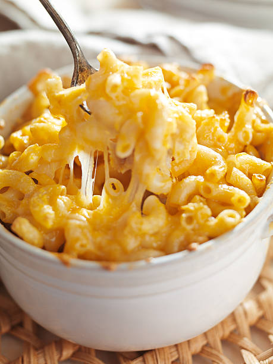

mac&cheese

Description
Mac and cheese has been a staple for many for a long time,
the reason being that it is is simple to make and delicious.
with only consisting of a few simple ingredients.
Ingredients
- macaroni
- butter
- flour
- milk
- cheese
- seasonings
steps
- Boil the noodles: Boil the macaroni in salted water until
the noodles are al dente. Drain and transfer to a prepared
baking dish.
- Make the cheese sauce: Melt butter, then whisk in the flour.
Whisk in the milk, bring to a simmer, and stir in the cheeses.
Season with salt and pepper and continue simmering until the
sauce is thick. Pour the sauce over the noodles and stir.
- Make the topping: Melt two tablespoons of butter in a skillet,
add the bread crumbs, and toast until the crumbs are brown.
Spread the topping over the macaroni and cheese, then sprinkle
with paprika.
- Bake the mac and cheese: Bake in the preheated oven until the
topping is golden brown.